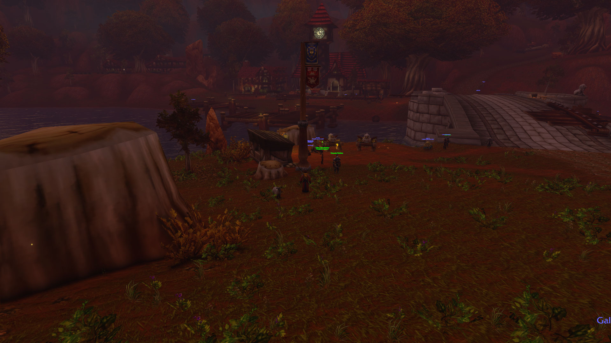
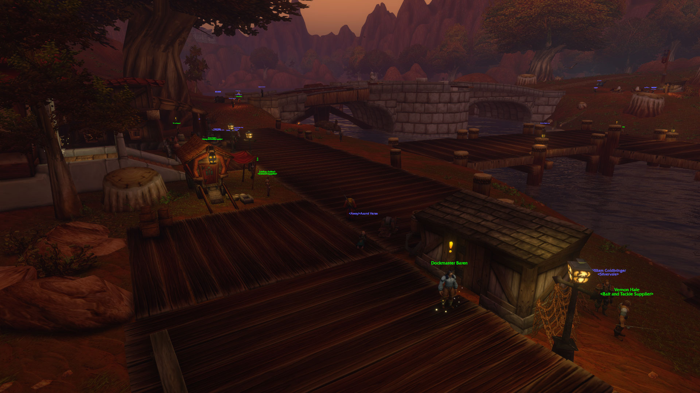
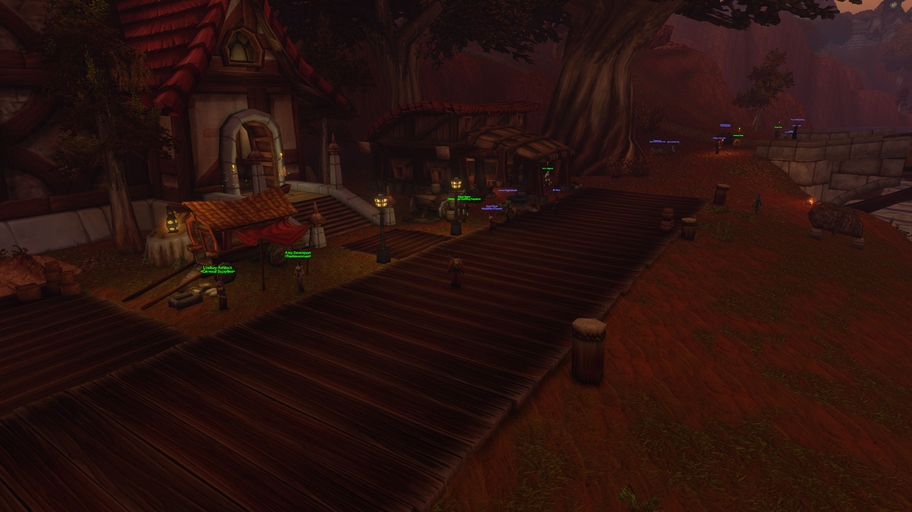

Full HD 1920 × 1080 originals are used as soon as they are uploaded; smaller previews are shown only as a temporary fallback. Narrative captions do not claim undocumented character dialogue or quest rewards.
12 November 2026 · Xuthar Morvayne · Level 17
After leaving Stormwind and encountering travellers, adventurers and bards, Xuthar reached Lakeshire in the Redridge Mountains. His Defias Brotherhood assignment was completed; the road now calls him back toward Westfall.



Full HD 1920 × 1080 originals are used as soon as they are uploaded; smaller previews are shown only as a temporary fallback. Narrative captions do not claim undocumented character dialogue or quest rewards.